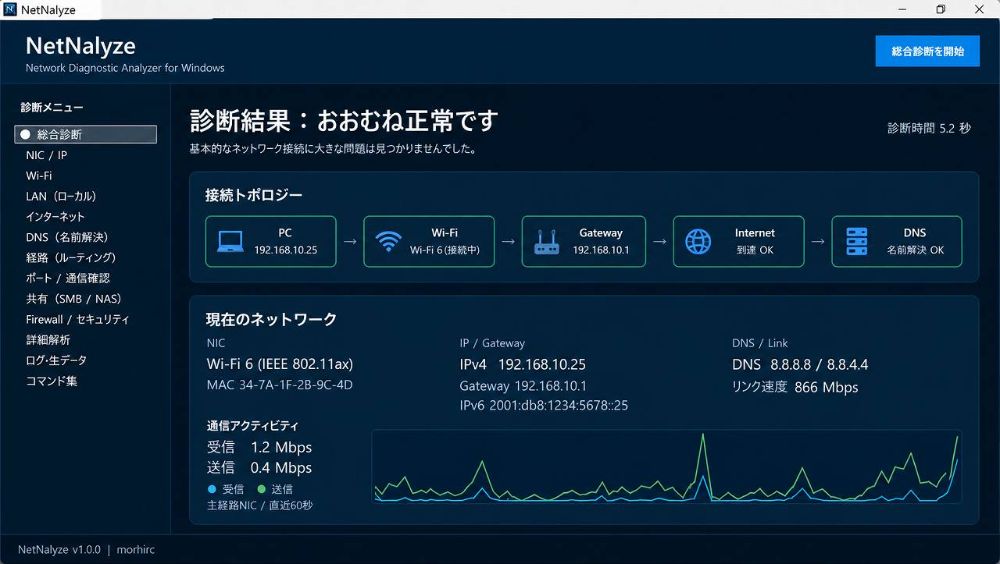
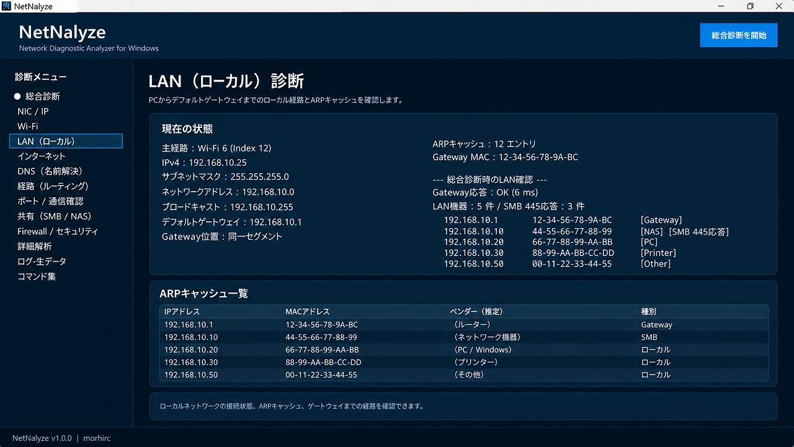
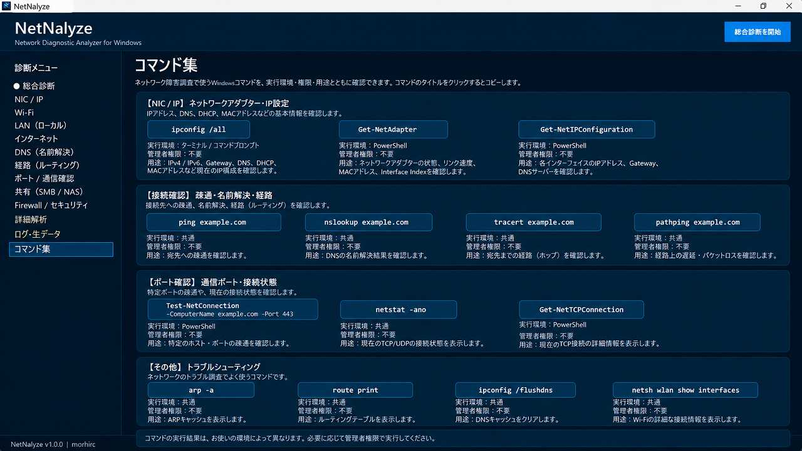

NetNalyzeとは
NetNalyzeは、Windowsのネットワーク状態を総合的に診断し、 ネットワーク障害の切り分けを支援する診断・解析ツールです。
NIC、IP、Wi-Fi、LAN、インターネット、DNS、ルーティングなどを順番に確認し、 現在の接続状態や診断結果を分かりやすく表示します。
インストール不要の自己完結型EXEで、 .NET Runtimeを事前にインストールする必要はありません。
主な機能
ネットワーク総合診断
PCからNIC・Gateway・Internet・DNSまで、 ネットワーク全体の状態を順番に確認します。
NIC / IP・Wi-Fi診断
IPアドレス、Gateway、DNS、リンク速度、 Wi-FiのSSID・信号強度・チャンネルなどを確認します。
LAN（ローカル）診断
Gatewayへの到達状態やARPキャッシュ、 LAN内機器・SMB応答などを確認します。
Internet / DNS診断
IPv4・IPv6の外部疎通、HTTPS通信、 DNS名前解決やDNSキャッシュを確認します。
経路・ポート・SMB診断
ルーティング情報、指定TCPポートの通信、 SMB/NASへの接続状態を確認できます。
詳細解析・コマンド集
NIC統計やログ・生データに加え、 障害調査で使用するWindowsコマンドを確認・コピーできます。
画面

ネットワーク全体を総合診断

LAN内の機器・通信状態を確認

ネットワーク診断コマンドを一覧表示
対応環境
使い方
- GitHub Releasesから最新版のZIPファイルをダウンロードします。
- ZIPファイルを任意の場所へ展開します。
- NetNalyze.exe をダブルクリックして起動します。
- 「総合診断を開始」をクリックします。
- 左側の診断メニューから各項目の詳細を確認します。
起動直後は現在のローカルネットワーク構成のみを取得し、 総合診断開始後に各種通信診断を実行します。
Wi-Fi情報について
Windowsのプライバシー設定（位置情報）が無効の場合、 SSID、BSSID、信号強度、チャンネルなどの Wi-Fi詳細情報を取得できない場合があります。
その場合は、 「設定」→「プライバシーとセキュリティ」→「位置情報」 を確認してください。
注意事項
- NetNalyzeはネットワーク状態の診断・確認を目的としたツールです。 ネットワーク設定を自動的に変更するツールではありません。
- コマンド集には状態を変更するコマンドも掲載されていますが、 NetNalyze自身がそれらを自動実行することはありません。
- 診断結果はネットワーク障害の原因を完全に保証・特定するものではありません。
- Windowsの設定、ネットワーク機器、セキュリティ製品などにより、 取得できる情報や診断結果が異なる場合があります。
Download / Source
最新版、更新履歴、ソースコードは GitHub上の公式リポジトリから確認できます。